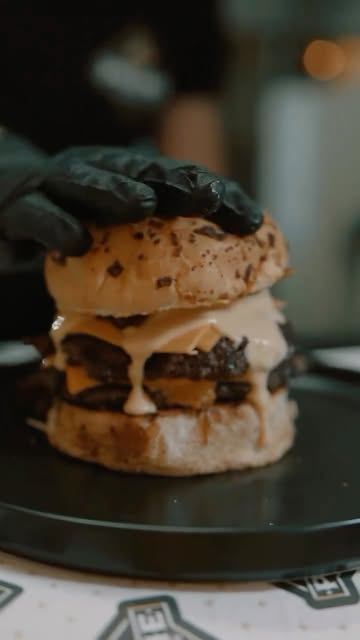

Hamburguesas
Medallones caseros y combinaciones de la casa.
Burgers, milas y steak
Hamburguesas caseras, milanesas y steak, con guarniciones abundantes. Pedí por WhatsApp al mediodía y a la noche, todos los días.
4,9 en Google · 61 opinionesQué hacemos
Medallones caseros y combinaciones de la casa.
Burgers de temporada que van rotando.
Milas abundantes para compartir o no.
Para los que vienen con hambre de carne.
Bienvenidos
En Prime hacemos hamburguesas con personalidad: medallones jugosos, panes dorados y combinaciones como la Sweet Onion o las de aros de cebolla, con guarniciones bien abundantes.
Atendemos todos los días, al mediodía y a la noche. Hacé tu pedido por WhatsApp y disfrutalo donde quieras.
Conocenos
Opiniones en Google
“¡Las mejores hamburguesas de Montevideo! Pedimos las de aros de cebolla y el sabor era de otro mundo, la guarnición súper abundante. Pediremos seguido.”
“Excelente la comida y muy buena la atención. Tuvimos la suerte de tener contacto con el dueño, súper amable y atento en todo momento. Se nota cuando hay ganas de hacer las cosas bien.”
“Excelente servicio y atención. Muy ricas las hamburguesas. Súper recomiendo.”
Así de fácil
Mirá la carta y contanos qué querés.
Confirmamos el pedido y el tiempo.
Tu burger, caliente y recién hecha.
Escribinos por WhatsApp y te respondemos a la brevedad.